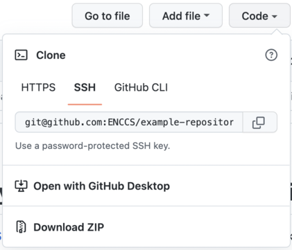
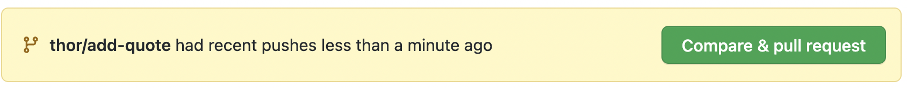
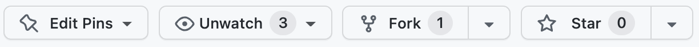

Instructor note
15 min teaching
30 min exercises
Collaborative Lesson Development
Questions
What tools and methods can be used to collaboratively develop training material?
Objectives
Explain how the Sphinx lesson template works.
Learn collaborative workflows for developing lessons.
This episode focuses on organisational and technical aspects of collaborative lesson development.
Discussion
This session is about collaborative lesson development. What advantages do you see in developing lessons collaboratively and sharing lessons (making material accessible)? What difficulties are there?
Lesson templates for static sites
Why static sites?
Decentralized (in terms of organization/namespace)
Forkable
Anybody can suggest changes
Sphinx-based
Example: this lesson
Starting point: sphinx-lesson
Templates can be freely re-used
Explore a Sphinx lesson (10 min)
Open this very lesson in GitHub (it uses the same format as typical CodeRefinery and ENCCS lessons) (you can also click on the “Edit on GitHub” link in the top-right corner).
Browse the files and understand the general idea. Check out at least these and use HackMD to record their functions:
.github/workflows/sphinx.yml
content/conf.py
content/index.rst
content/lesson-development.md
If you want, try to make a pull request to this lesson. It doesn’t have to have any significant content, it can be a pure test pull request.
Create your own lesson (10 min)
Use the sphinx-lesson-template to create a new lesson of your choice.
Click “Use this template” and choose a name and where you want to create it. Make it Public and don’t select “Include all branches”
After the new repository is created, wait a couple of minutes before the
gh-pagesbranch is created by the automatic GitHub Action. Then go to “Settings” and click “Pages” from the left menu. There selectgh-pagesunder the Branch section. Don’t change from “/ (root)”.After a few minutes, there should be a new box at the top of the “pages” page showing “Your site is live at https://
.github.io/ ”. Click the link to see your empty lesson! If you want to try out different functionality, go to https://coderefinery.github.io/sphinx-lesson/ and have a look at the episodes under “Basic Syntax”. You can create new episodes in Markdown, RST or a Jupyter notebook and include them in
index.rstunder “The lesson” (make sure to use consistent indentation)
Contributing to existing lessons
Our lessons are collaboratively developed and some are created by many people. We encourage everyone to contribute to the lessons.
Lessons should be reviewed often - essentially, before each workshop by the instructor of that workshop. This can be a quick review, looking at issues and fixing easy things, or more thorough.
Every so often, there is an extensive hackathon period of fully revising a lesson and making major improvements.
CodeRefinery has a lesson-review checklist to guide the review process.
Collaborative workflows
There are two main ways to collaborate on lesson (or code) development on a repository-hosting website like GitHub, GitLab or Bitbucket.
Centralized workflow
{kind=link}
Typically all developers have both read and write permissions (double-headed arrows).
Suited for cases where all developers are in the same group or organization or project.
Everybody who wants to contribute needs write access.
Good idea to write-protect the main branch (typically master or main).
Forking workflow
{kind=link}
In the forking layout, again we call one repository the “central” repository but people push to forks (their own copies of the repository on GitHub/GitLab/Bitbucket).
Anybody can contribute without asking for permission (to public projects).
Maintainer still has full control over what is merged.
There is now more than one remote to work with.
Practice collaborative workflow (10 min)
Here we will practice the forking workflow. NOTE: You will need a GitHub account to perform this exercise.
The maintainer of the repository will first need to add you as contributors with write permissions.
Navigate to this example repository on GitHub.
Clone the repository to your computer by clicking the Code button and copy-paste the name of the remote. Choose SSH if you have uploaded SSH keys to GitHub, otherwise go for HTTPS. Then go to a terminal on your computer, and type
git clone <copy-pasted-remote>.
Best practice: create a new branch in your local repository:
git checkout -b <name/feature>(replace “name” with your name, and “feature” with a descriptor of your intended change).Now add a new plain-text file to the repository. You can create it with a terminal editor (nano, emacs, vim) or a simple text editor. In the file, add either a famous quote, a cooking recipe, a poem or something else that you like.
After the file is created, stage it with
git add <filename>.After staging, commit the file with
git commit -m <some descriptive commit message>.Now push your commit to your fork:
git push origin <name/feature>In the output of the push command you will see a URL for creating a pull request. Copy-paste it to a web browser.

You can also just go to the page of the example repository - there should be a new menu at the top inviting you to create a pull request. On the “Open a pull request” page, make sure that you are sending the pull request from your feature branch to the main branch

Finally, edit the title of the pull request and add a comment (optional), and then click the green “Create pull request” button.
You have now created a pull request and a collaborator can review your change, provide feedback if needed (e.g. to ask for changes), and then merge it into the main branch!
Navigate to this example repository on GitHub
Fork the repository to your own GitHub account by clicking the Fork button at the top. 
After the fork has been created, clone the repository to your computer by clicking the Code button and copy-paste the name of the remote. Choose SSH if you have uploaded SSH keys to GitHub, otherwise go for HTTPS. Then go to a terminal on your computer, and type
git clone <copy-pasted-remote>.
Best practice: create a new branch in your local repository:
git checkout -b <name/feature>(replace “name” with your name, and “feature” with a descriptor of your intended change).Now add a new plain-text file to the repository. You can create it with a terminal editor (nano, emacs, vim) or a simple text editor. In the file, add either a famous quote, a cooking recipe, a poem or something else that you like.
After the file is created, stage it with
git add <filename>.After staging, commit the file with
git commit -m <some descriptive commit message>.Now push your commit to your fork:
git push origin <name/feature>In the output of the push command you will see a URL for creating a pull request. Copy-paste it to a web browser.
You can also just go to the page of your forked repository - there should be a new menu at the top inviting you to create a pull request.On the “Open a pull request” page, make sure that you are sending the pull request from your feature branch on your forked repository to the main branch of the parent repository
Finally, edit the title of the pull request and add a comment (optional), and then click the green “Create pull request” button.
You have now created a pull request and a maintainer of the central repository can review your change, provide feedback if needed (e.g. to ask for changes), and then merge it into the main branch!
Bonus question: Why is it best practice to create a “feature” branch in your local repository?
Code reviews
Why code review?
In collaborative software development, it is standard practice to review each other’s code changes. This serves multiple purposes:
Others in the team learn about your changes.
An extra pair of eyes are useful to catch bugs or suggest improvements
It’s possible (and common) to enable automated testing so that each pull request is tested automatically in the cloud so that the reviewer can see whether a pull request passes all unit tests.
There’s no reason not to apply these practices to collaborative lesson development!
Recommendations and lessons learned
Convert feedback about lessons and suggestions for improvements into issues so that these don’t get lost.
Make your lesson citable: get a DOI.
Credit contributors (not only Git commits).
Instructor guide is essential for new instructors.
Lesson changes should be accompanied with instructor guide changes (it’s like a documentation for the lesson material).
Apply and validate backwards lesson design again and again.
Make it possible to try out new ideas (by making the lesson branch-able).
Before making larger changes, talk with somebody and discuss these changes.
For substantial changes we recommend to first open an issue and describe your idea and collect feedback before you start with an extensive rewrite.
For things still under construction, open a draft pull request to collect feedback and to signal to others what you are working on.